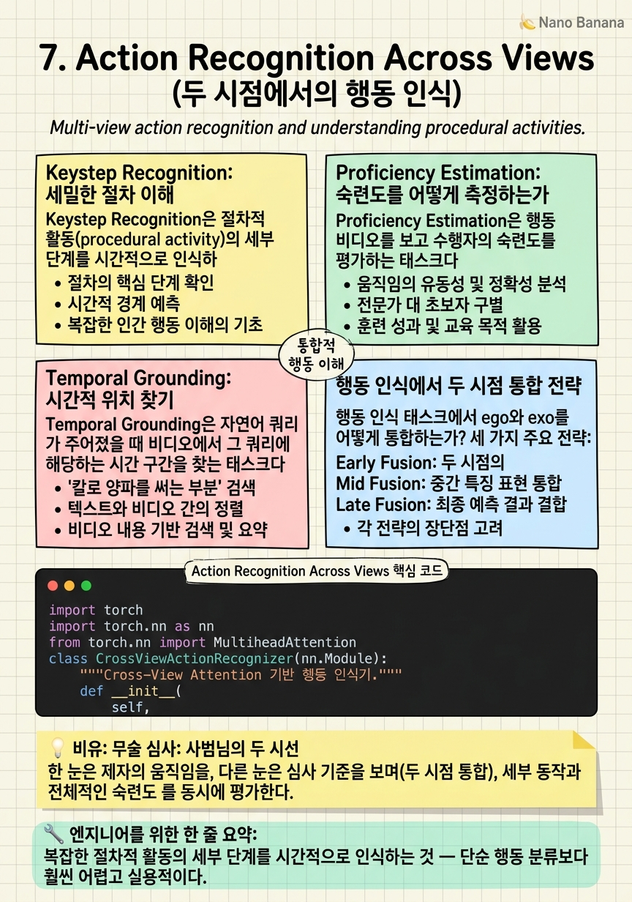

Action Recognition Across Views

🎯 학습 목표
- Keystep recognition이 일반 행동 인식과 어떻게 다른지 설명할 수 있다
- Ego-Exo4D의 proficiency estimation 태스크 정의와 그 평가 방법을 이해한다
- 두 시점에서의 temporal grounding 문제를 수식으로 정의할 수 있다
- 현재 방법들의 성능 병목을 분석하고 개선 방향을 제안할 수 있다
행동 인식(action recognition)은 ego-exo 연구의 출발점이었다. '이 비디오에서 무슨 행동을 하는가?' — 이 단순한 질문이 발전을 거듭하면서 이제는 '피아노의 어떤 키를 어떤 순서로 치는가?', '이 요리사는 초보인가 숙련자인가?', '어느 시점에서 요리의 이 단계가 시작되는가?'로 확장됐다.
Ego-Exo4D는 이 세밀한 행동 이해를 위한 태스크들을 체계적으로 정의했다. Keystep Recognition은 복잡한 절차적 활동(자전거 수리, 요리 등)의 각 세부 단계를 인식하는 것이다. Proficiency Estimation은 같은 활동을 수행하는 사람의 숙련도를 평가한다. 이 두 태스크 모두 ego와 exo 두 시점의 정보를 통합하면 더 잘 수행할 수 있다는 가설이 있지만, 실제로 어떻게 통합해야 하는지는 여전히 열려있는 문제다.
핵심 내용
Keystep Recognition: 세밀한 절차 이해
Keystep Recognition은 절차적 활동(procedural activity)의 세부 단계를 시간적으로 인식하는 태스크다. 예: 자전거 수리에서 '바퀴를 분리한다', '타이어를 제거한다', '튜브를 교체한다', '타이어를 재조립한다' 등 각 단계의 시작-끝 시간을 인식하는 것.
이 태스크의 어려움은 세밀한 시간적 경계와 활동 내 위치 의존성에 있다. 같은 '손으로 잡기' 동작이 맥락에 따라 '바퀴 분리 시작'일 수도, '타이어 제거 중'일 수도 있다. 이전 단계 완료 여부를 기억하는 시간적 맥락이 필요하다.
Ego와 exo의 역할 분담:
- Ego: 세밀한 손 움직임과 도구 상호작용 → 어느 특정 단계인지 판단에 유리
- Exo: 전신 자세와 작업 공간 전체 맥락 → 현재 단계가 절차의 어느 위치인지 판단에 유리
예를 들어 '나사 조이기' 단계는 ego에서 손과 드라이버가 보이고, exo에서는 자전거 전체와 조여지는 부품의 위치가 보인다. 두 정보를 합쳐야 정확한 keystep 인식이 가능하다.
Proficiency Estimation: 숙련도를 어떻게 측정하는가
Proficiency Estimation은 행동 비디오를 보고 수행자의 숙련도를 평가하는 태스크다. 스포츠 코칭, 직업 훈련, 의료 교육 등 실용적 응용이 많다.
Ego-Exo4D에서 proficiency는 '초보(novice) vs. 숙련(expert)'의 이진 분류부터, 세밀한 스케일(1-5점)까지 다양하게 정의된다. 평가자들이 비디오를 보고 숙련도를 평가한 어노테이션이 데이터셋에 포함된다.
핵심 도전: 무엇이 숙련도를 구성하는가? 단순히 더 빠른 것이 숙련된 것은 아니다. 스무스한 움직임, 불필요한 동작의 부재, 도구의 효율적 사용, 오류 수정 패턴 등 복합적 요소가 숙련도를 결정한다.
Ego vs. Exo의 역할:
- Ego: 손의 정밀도, 도구 그립, 세밀한 조작 방식 → 손-기술 숙련도 평가에 핵심
- Exo: 자세, 효율적 몸통 움직임, 공간 활용 → 전체적 기술 완성도 평가에 유리
흥미로운 연구 방향: 숙련도 피드백 생성. 단순히 '숙련도 = 3.2점'을 출력하는 것을 넘어, '왼손의 그립이 불안정합니다', '자세를 더 낮추면 힘 효율이 좋아집니다' 같은 구체적 피드백을 자동으로 생성하는 것. 이 때 ego와 exo 두 시점의 정보를 결합한 세밀한 이해가 필수다.
Temporal Grounding: 시간적 위치 찾기
Temporal Grounding은 자연어 쿼리가 주어졌을 때 비디오에서 그 쿼리에 해당하는 시간 구간을 찾는 태스크다. 예: '자전거 바퀴가 분리된 순간' 쿼리 → 비디오에서 [1:23, 1:47] 구간 반환.
Ego-exo에서의 temporal grounding은 두 가지 변형이 있다:
1. Single-view temporal grounding: 한 시점에서 시간 구간 찾기 (비교적 잘 연구됨)
2. Cross-view temporal grounding: 한 시점의 쿼리를 다른 시점 비디오에서 찾기
예: 'ego 비디오에서 손이 냄비를 집는 순간' 쿼리로 exo 비디오에서 같은 시간 구간 찾기. 이 때 두 비디오가 시간 동기화되어 있으면 기하학적으로 해결 가능하지만, 비동기화 상황이나 의미적 매칭이 필요한 경우 더 어렵다.
수식: \(f: (\text{query}, V_{\text{ego}}) \to [t_s, t_e]_{\text{exo}}\)
현재 접근법들의 한계: 대부분의 temporal grounding 방법이 단일 비디오 내 탐색에 최적화되어 있어, cross-view 버전에 직접 적용하면 성능이 낮다. Cross-view attention이나 명시적 시간적 대응 메커니즘이 필요하다.
행동 인식에서 두 시점 통합 전략
행동 인식 태스크에서 ego와 exo를 어떻게 통합하는가? 세 가지 주요 전략:
Early Fusion: 두 시점의 비디오를 초기에 결합해 단일 스트림으로 처리한다. 빠르지만 각 시점의 특성을 충분히 학습하기 어렵다.
Late Fusion: 각 시점을 독립적으로 처리해 별도 예측을 내놓고, 마지막에 앙상블한다. 각 시점을 충분히 활용하지만 두 시점 간의 상호작용을 포착하지 못한다.
Cross-View Attention (Mid Fusion): 각 시점의 특징을 추출한 후 Cross-attention으로 두 시점이 서로를 참조하면서 표현을 정제한다.
\[\text{Attn}(Q_{\text{ego}}, K_{\text{exo}}, V_{\text{exo}}) = \text{softmax}\left(\frac{Q_{\text{ego}} K_{\text{exo}}^T}{\sqrt{d}}\right) V_{\text{exo}}\]
Ego 특징이 쿼리, exo 특징이 키/값이 되어 ego가 exo에서 어떤 정보를 참조할지를 attention으로 결정한다.
경험적으로 Mid Fusion (Cross-View Attention)이 행동 인식에서 가장 좋은 성능을 보이는 경향이 있다 — 하지만 이것도 태스크에 따라 다르다. Keystep recognition처럼 세밀한 시간적 경계가 필요한 태스크에서는 temporal attention이 중요하고, proficiency estimation처럼 전반적 패턴이 중요한 태스크에서는 global aggregation이 더 유효할 수 있다.
💡 비유로 이해하기
무술 승단 심사를 생각해보자. 사범님이 앞에서 보는 것(exo 시점)과 학생이 자신의 수련 영상(ego 시점)을 보는 것은 완전히 다른 정보를 준다.
사범님(exo)은 전체 자세, 균형, 체중 이동, 타이밍을 본다. 학생의 ego 시점은 자신의 손이 목표를 정확히 가격하는지, 그립이 맞는지, 시선이 적절한지를 확인한다. 숙련도를 정확히 평가하려면 두 시점이 모두 필요하다.
Keystep recognition은 초보 학생이 '지금 제가 어느 단계를 하고 있나요?'를 물어볼 때 사범님이 '3초 전에 이미 다음 단계로 넘어갔어야 했는데, 아직 전 단계에 있네요'라고 대답하는 것과 같다. 큰 그림(exo)에서 보면 진도를 알 수 있고, 클로즈업(ego)에서 보면 기술의 정밀도를 알 수 있다.
💻 코드 예시
Cross-view attention을 사용한 행동 인식 모델의 핵심 구현이다. Ego 특징이 exo 특징을 참조하면서 크로스뷰 표현을 학습한다.
import torch
import torch.nn as nn
from torch.nn import MultiheadAttention
class CrossViewActionRecognizer(nn.Module):
"""Cross-View Attention 기반 행동 인식기."""
def __init__(
self,
feat_dim: int = 768,
num_heads: int = 8,
num_classes: int = 115, # Ego-Exo4D 기준
dropout: float = 0.1,
):
super().__init__()
# 시점별 독립 시간적 인코더
self.ego_encoder = nn.TransformerEncoder(
nn.TransformerEncoderLayer(feat_dim, num_heads, 2048, dropout),
num_layers=3,
)
self.exo_encoder = nn.TransformerEncoder(
nn.TransformerEncoderLayer(feat_dim, num_heads, 2048, dropout),
num_layers=3,
)
# Cross-view attention: ego가 exo를 참조
self.cross_attn = MultiheadAttention(
embed_dim=feat_dim, num_heads=num_heads,
dropout=dropout, batch_first=True,
)
# 최종 분류 헤드
self.classifier = nn.Sequential(
nn.LayerNorm(feat_dim * 2),
nn.Linear(feat_dim * 2, 512),
nn.GELU(),
nn.Dropout(dropout),
nn.Linear(512, num_classes),
)
def forward(
self,
ego_feat: torch.Tensor, # [B, T, D]
exo_feat: torch.Tensor, # [B, T', D]
) -> torch.Tensor:
# 각 시점 독립 인코딩
h_ego = self.ego_encoder(ego_feat) # [B, T, D]
h_exo = self.exo_encoder(exo_feat) # [B, T', D]
# Cross-view attention: ego가 exo를 참조해 정보를 보완
ego_enhanced, _ = self.cross_attn(
query=h_ego, key=h_exo, value=h_exo
) # [B, T, D]
# 전역 풀링 후 두 시점 연결
ego_global = ego_enhanced.mean(dim=1) # [B, D]
exo_global = h_exo.mean(dim=1) # [B, D]
fused = torch.cat([ego_global, exo_global], dim=-1) # [B, 2D]
return self.classifier(fused) # [B, num_classes]
핵심은 cross_attn에서 query=h_ego, key=h_exo, value=h_exo로 설정하는 것이다. Ego 특징이 'exo에서 어떤 정보를 가져올지'를 attention 가중치로 결정한다. 최종적으로 ego가 exo를 참조해 보완된 표현(ego_enhanced)과 원래 exo 표현을 결합해 분류에 사용한다.
🏭 현업에서의 평가
✅ 시니어가 보는 것
- Keystep recognition을 일반 행동 인식과 구분하고 왜 더 어려운지 설명
- Cross-view attention의 수식을 쓰고 어떤 정보가 어느 방향으로 흐르는지 설명
- Proficiency estimation에서 평가 지표(Spearman 상관관계 vs. 분류 정확도)의 선택 이유
- Early/Late/Mid fusion의 트레이드오프를 태스크 종류별로 분석
⚠️ 레드 플래그
- 모든 행동 인식 문제를 단일 분류 태스크로 취급하는 경우
- Cross-view attention에서 Q/K/V의 역할을 혼동하는 경우
- Temporal grounding과 행동 분류를 같은 문제로 보는 경우
🎤 예상 인터뷰 질문
- Keystep recognition에서 ego와 exo 중 어느 시점이 더 중요한가? 태스크(어느 keystep인가 vs. 언제 시작했는가)에 따라 다른가?
- Proficiency estimation에서 같은 행동을 빠르게 하는 것이 반드시 숙련됐다는 신호인가? 어떤 지표를 사용해야 하는가?
- Cross-view attention에서 exo→ego 방향과 ego→exo 방향 중 어느 것이 행동 인식에 더 유익한가? 왜?
✨ 핵심 요약
Keystep Recognition의 세밀함
복잡한 절차적 활동의 세부 단계를 시간적으로 인식하는 것 — 단순 행동 분류보다 훨씬 어렵고 실용적이다.
Proficiency Estimation의 응용 가치
숙련도 자동 평가는 스포츠 코칭, 직업 훈련, 의료 교육에서 큰 가치를 가진다.
Cross-View Attention이 핵심
Ego가 query, exo가 key/value인 cross-attention이 두 시점 정보를 가장 효과적으로 통합한다.
태스크별 최적 fusion이 다르다
Keystep 인식은 temporal cross-attention이, proficiency 추정은 global aggregation이 더 유효할 수 있다.
Temporal Grounding의 크로스뷰 확장
한 시점의 쿼리로 다른 시점에서 시간 구간을 찾는 cross-view temporal grounding이 미해결 문제다.
피드백 생성이 미래 방향
숫자 점수를 넘어 ego/exo 두 시점에서 구체적 개선 피드백을 생성하는 것이 고부가가치 연구 방향이다.